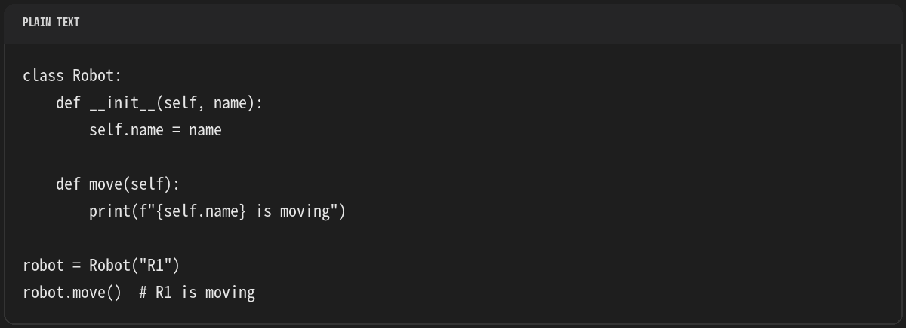
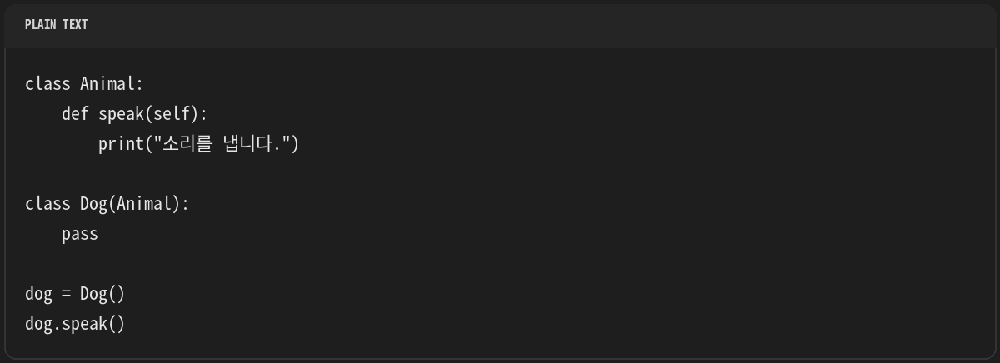
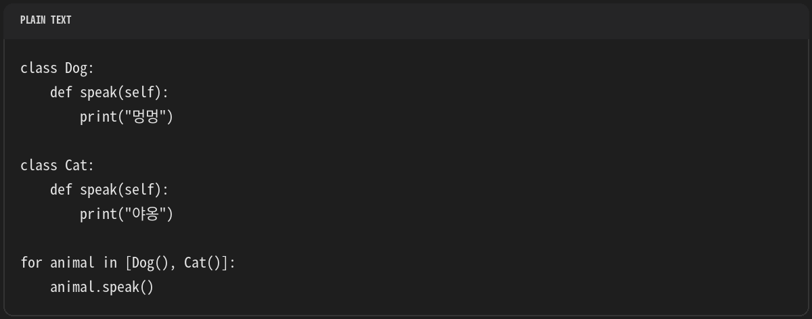
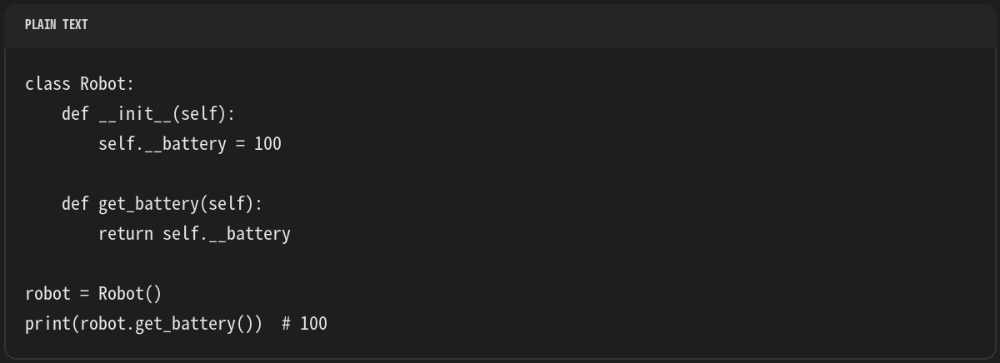
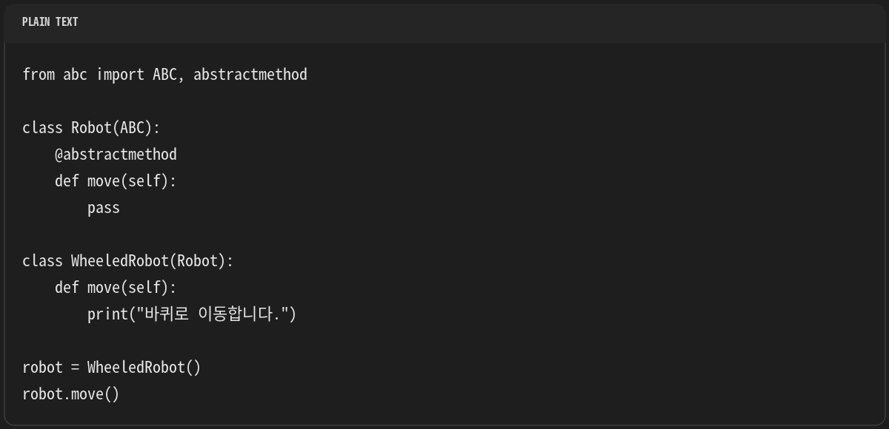

📚 2주차 Python 기초&심화 문법 (2026.10.15 Thu ~ 2026.10.20 Tue)
Total : 4 days
📕 D. OOP | Object-Oriented Programming (2026.10.20 Tue)
📃 a. OOP (객체지향 프로그래밍)
- OOP : 데이터와 기능을 하나의 객체로 묶어 프로그램을 설계하는 방식
- Class (클래스) : 객체를 만들기 위한 설계도
- Instance (인스턴스) : 클래스를 기반으로 생성한 실제 객체
- Attribute (속성) : 객체가 가지는 데이터
- Method (메서드) : 객체가 수행하는 기능

PLAIN TEXT 코드
class: 클래스 정의__init__(): 인스턴스 생성 시 초기화self: 메서드가 호출된 인스턴스 자신robot:Robot클래스로 생성한 인스턴스
📃 주요 OOP 개념
| 개념 | 의미 | 예시 |
|---|---|---|
| 상속 (Inheritance) | 기존 클래스의 속성과 기능을 물려받음 | class Dog(Animal): |
| 다형성 (Polymorphism) | 같은 메서드 호출이 객체에 따라 다르게 동작 | dog.speak() |
| 캡슐화 (Encapsulation) | 데이터와 기능을 묶고 내부 구현에 대한 직접 접근을 관리 | _value, __value |
| 추상화 (Abstraction) | 핵심 기능만 외부에 노출하고 세부 구현을 감춤 | move() 인터페이스 |
1. 상속 (Inheritance)
기존 클래스의 기능을 재사용하고 확장하는 개념

PLAIN TEXT 코드
2. 다형성 (Polymorphism)
같은 메서드 이름을 사용해도 객체에 따라 다른 결과를 낼 수 있는 개념

PLAIN TEXT 코드
3. 캡슐화 (Encapsulation)
객체 내부의 데이터를 보호하고 정해진 메서드를 통해 접근하도록 설계하는 개념

PLAIN TEXT 코드
※ __battery는 이름 변경(Name Mangling)이 적용되어 직접 접근이 제한되지만, 완전한 보안 기능은 아닙니다.
4. 추상화 (Abstraction)
공통적으로 필요한 기능의 형태를 정의하고, 실제 동작 방식은 하위 클래스에서 구현하는 개념

PLAIN TEXT 코드
ABC: 추상 클래스 정의에 활용@abstractmethod: 하위 클래스에서 구현해야 하는 메서드 지정
💡 핵심 요약
- Class & Instance : 클래스는 설계도, 인스턴스는 실제 객체
- 상속 : 기존 기능을 물려받아 재사용
- 다형성 : 동일한 인터페이스로 다양한 동작 수행
- 캡슐화 : 데이터와 기능을 묶고 접근을 관리
- 추상화 : 핵심 기능과 인터페이스를 정의하고 세부 구현을 감춤
🎯 학습 목표: 클래스를 사용해 객체를 생성하고, 객체지향 프로그래밍의 4가지 핵심 원리를 이해할 수 있다.